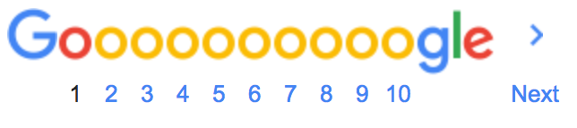

<!DOCTYPE html>

<html lang="en"><head>
<meta charset="utf-8">
<meta name="viewport" content="width=device-width, initial-scale=1.0">
<link rel="stylesheet" type="text/css" href="style.css">
<title>A Google.com Search Results Page</title> 
</head></html>

<body>
<div ="main">
	<div ="top">
		<h1 id="googlelogo">
		</h1>
		<h1><input type="text" class="searchbar" placeholder="The Odin Project"></h1>
		<h1 id="google-apps"></h1>
		<a id="signin" href="#">Sign In</a>

		<h2>All &emsp; &emsp; Maps &emsp; &emsp; Videos &emsp; &emsp; News &emsp; &emsp; Images &emsp; &emsp; More &nbsp; &nbsp; &nbsp; &nbsp; &nbsp; &nbsp; &nbsp; &nbsp; &nbsp; &nbsp; &nbsp; &nbsp; Settings &nbsp; &nbsp;Tools</h2>
	</div>


		<div id="subject1">
		<ul>	
			<li>
			<a id="theodinproject" href="https://www.theodinproject.com" style="text-decoration:none"><font size="4"> The Odin Project: Your Career in Web Development Starts Here</font></a></li>
	
			 <li>
			<a id="theodinproject" href="https://www.theodinproject.com" style="text-decoration:none">
					https://www.theodinproject.com</a></li>
			<li><b>The Odin Project</b> empowers aspiring web developers to learn together.</li>
		</ul> </div>


		<div id="subject2">
		<ul>	
			<li>
			<a id="medium.com" href="https://www.google.com/url?sa=t&rct=j&q=&esrc=s&source=web&cd=8&cad=rja&uact=8&ved=2ahUKEwiM-uD0wdXcAhXQZt4KHSacBg4QFjAHegQIBBAB&url=https%3A%2F%2Fmedium.com%2Fthe-odin-project%2Fmy-path-to-web-development-part1-415e420364e8&usg=AOvVaw0giGc1zvKx6PEPvi_u53YV" style="text-decoration:none"><font size="4"> My path to web development -- The Odin Project -- Medium </font></a></li>
	
			 <li>
			<a id="medium.com" href="https://www.google.com/url?sa=t&rct=j&q=&esrc=s&source=web&cd=8&cad=rja&uact=8&ved=2ahUKEwiM-uD0wdXcAhXQZt4KHSacBg4QFjAHegQIBBAB&url=https%3A%2F%2Fmedium.com%2Fthe-odin-project%2Fmy-path-to-web-development-part1-415e420364e8&usg=AOvVaw0giGc1zvKx6PEPvi_u53YV" style="text-decoration:none">
					https://medium.com/the-odin-project/my-path-to-web-development-part1-415e42036...</a></li>
			<li>May 26, 2017 - Someday, however, I saw a thread on my Reddit feed that talked about learning to code. I clicked on it and discovered <b>The Odin Project</b>. Yes ...</li>
		</ul> </div>
		<div id="subject3">
		<ul>	
			<li>
			<a id="theodinproject-github" href="https://www.google.com/url?sa=t&rct=j&q=&esrc=s&source=web&cd=9&cad=rja&uact=8&ved=2ahUKEwiM-uD0wdXcAhXQZt4KHSacBg4QFjAIegQIBRAB&url=https%3A%2F%2Fgithub.com%2FTheOdinProject&usg=AOvVaw3pJSL8W7h7p6vPw3F7ocFR" style="text-decoration:none"><font size="4"> The Odin Project - GitHub </font></a></li>
	
			 <li>
			<a id="theodinproject-github" href="https://www.google.com/url?sa=t&rct=j&q=&esrc=s&source=web&cd=9&cad=rja&uact=8&ved=2ahUKEwiM-uD0wdXcAhXQZt4KHSacBg4QFjAIegQIBRAB&url=https%3A%2F%2Fgithub.com%2FTheOdinProject&usg=AOvVaw3pJSL8W7h7p6vPw3F7ocFR" style="text-decoration:none">
					https://github.com/TheOdinProject</a></li>
			<li>GitHub is where people build software. More than 28 million people use GitHub to discover, fork, and contribute to over 85 million <b>projects</b>.</li>
		</ul> </div>

<div id="subject4">
		<ul>	
			<li>
			<a id="everydayutilatarian" href="https://www.google.com/url?sa=t&rct=j&q=&esrc=s&source=web&cd=10&cad=rja&uact=8&ved=2ahUKEwiM-uD0wdXcAhXQZt4KHSacBg4QFjAJegQIBxAB&url=http%3A%2F%2Feverydayutilitarian.com%2Fessays%2Fnotes-on-the-odin-project%2F&usg=AOvVaw36nXkUm_0yvJEjAaFtdyd5" style="text-decoration:none"><font size="4">A Better Way to Learn Programming? Notes on The Odin Project... </font></a></li>
	
			 <li>
			<a id="everydayutilitarian" href="https://www.google.com/url?sa=t&rct=j&q=&esrc=s&source=web&cd=10&cad=rja&uact=8&ved=2ahUKEwiM-uD0wdXcAhXQZt4KHSacBg4QFjAJegQIBxAB&url=http%3A%2F%2Feverydayutilitarian.com%2Fessays%2Fnotes-on-the-odin-project%2F&usg=AOvVaw36nXkUm_0yvJEjAaFtdyd5" style="text-decoration:none">everydayutilitarian.com/essays/notes-on-the-odin-project/</a></li>
			<li>Jul 9, 2014 - That being said, I do have some modifications I'd like to see to The Odin Project. So consider doing <b>The Odin Project</b>, except with the following ...</li>
		</ul> </div>


<div id="subject5">
		<ul>	
			<li>
			<a id="theodinproject-facebook" href="https://www.google.com/url?sa=t&rct=j&q=&esrc=s&source=web&cd=11&cad=rja&uact=8&ved=2ahUKEwiM-uD0wdXcAhXQZt4KHSacBg4QFjAKegQIAxAB&url=https%3A%2F%2Fwww.facebook.com%2Ftheodinproject%2F&usg=AOvVaw1HErYaR3lshaAf9bwVFmOr" style="text-decoration:none"><font size="4">The Odin Project - Home | Facebook</font></a></li>
	
			 <li>
			<a id="theodinproject-facebook" href="https://www.google.com/url?sa=t&rct=j&q=&esrc=s&source=web&cd=11&cad=rja&uact=8&ved=2ahUKEwiM-uD0wdXcAhXQZt4KHSacBg4QFjAKegQIAxAB&url=https%3A%2F%2Fwww.facebook.com%2Ftheodinproject%2F&usg=AOvVaw1HErYaR3lshaAf9bwVFmOr" style="text-decoration:none">https://www.facebook.com/theodinproject/</a></li>
			<li>At <b>the Odin Project</b>, after releasing our freshly redesigned website (https://www.theodinproject.com/) we are happy to say we are now hard at work refreshing and ...
			</li>
		</ul> </div>

<div id="subject6">
		<ul>	
			<li>
			<a id="theodinproject-twitter" href="https://www.google.com/url?sa=t&rct=j&q=&esrc=s&source=web&cd=12&cad=rja&uact=8&ved=2ahUKEwiM-uD0wdXcAhXQZt4KHSacBg4QFjALegQIARAB&url=https%3A%2F%2Ftwitter.com%2Ftheodinproject%3Flang%3Den&usg=AOvVaw1P_9WKcXtcjyH6Ys5J3FY0" style="text-decoration:none"><font size="4"> The Odin Project (@TheOdinProject) | Twitter</font></a></li>
	
			 <li>
			<a id="theodinproject-twitter" href="https://www.google.com/url?sa=t&rct=j&q=&esrc=s&source=web&cd=12&cad=rja&uact=8&ved=2ahUKEwiM-uD0wdXcAhXQZt4KHSacBg4QFjALegQIARAB&url=https%3A%2F%2Ftwitter.com%2Ftheodinproject%3Flang%3Den&usg=AOvVaw1P_9WKcXtcjyH6Ys5J3FY0" style="text-decoration:none">
					https://twitter.com/theodinproject?lang=en</a></li>
			<li>The latest Tweets from <b>The Odin Project (@TheOdinProject)</b>. An open source online curriculum for learning web development. We help our students learn the ...</li>
		</ul> </div>

<div id="subject7">
		<ul>	
			<li>
			<a id="theodinproject-quora" href="https://www.google.com/url?sa=t&rct=j&q=&esrc=s&source=web&cd=13&cad=rja&uact=8&ved=2ahUKEwiM-uD0wdXcAhXQZt4KHSacBg4QFjAMegQIABAB&url=https%3A%2F%2Fwww.quora.com%2FHow-does-The-Odin-Project-compare-to-programming-bootcamps-like-Hack-Reactor&usg=AOvVaw3eoropiUPWxg--jqahv9Pf" style="text-decoration:none"><font size="4"> How does The Odin Project compare to programming bootcamps like ...</font></a></li>
	
			 <li>
			<a id="theodinproject-quora" href="https://www.google.com/url?sa=t&rct=j&q=&esrc=s&source=web&cd=13&cad=rja&uact=8&ved=2ahUKEwiM-uD0wdXcAhXQZt4KHSacBg4QFjAMegQIABAB&url=https%3A%2F%2Fwww.quora.com%2FHow-does-The-Odin-Project-compare-to-programming-bootcamps-like-Hack-Reactor&usg=AOvVaw3eoropiUPWxg--jqahv9Pf" style="text-decoration:none">https://www.quora.com/How-does-The-Odin-Project-compare-to-programming-bootc...


					</a></li>
			<li>However, I did not dedicate myself to learn via <b>The Odin Project</b>. I went through its intro curriculum that covered basic HTML, CSS, and jQuery. I contributed to ...</li>

		</ul> </div>

<div id="subject8">
		<ul>	
			<li>Searches related to the odin project</li>
			<li><a id="bottom-related-searches1" href="https://www.google.com/search?client=firefox-b&q=the+odin+project+review&sa=X&ved=0ahUKEwiM-uD0wdXcAhXQZt4KHSacBg4Q1QIInwEoAA" style="text-decoration:none"><font size="3"> the odin project <b>review</b> &emsp; &emsp; &emsp; &emsp;</font></a> &emsp; &emsp; &emsp; &emsp; <a id=bottom-related-searches2" href="https://www.google.com/search?client=firefox-b&q=the+odin+project+success+stories&sa=X&ved=0ahUKEwiM-uD0wdXcAhXQZt4KHSacBg4Q1QIIowEoBA" style="text-decoration:none"><font size="3">the odin project <b>success stories</b> </font>
			</li>
		</ul> </div>

<div id="subject9">
		<ul>	
			<li><a id="bottom-related-searches3" href="https://www.google.com/search?client=firefox-b&q=the+odin+project+reddit&sa=X&ved=0ahUKEwiM-uD0wdXcAhXQZt4KHSacBg4Q1QIIoAEoAQ" style="text-decoration:none"><font size="3"> the odin project <b>reddit</b> &emsp; &emsp; &emsp; &emsp;</font></a> &emsp; &emsp; &emsp; &emsp; <a id=bottom-related-searches4" href="https://www.google.com/search?client=firefox-b&q=the+odin+project+python&sa=X&ved=0ahUKEwiM-uD0wdXcAhXQZt4KHSacBg4Q1QIIpAEoBQ" style="text-decoration:none"><font size="3">the odin project <b>python</b></font></a>
			</li>
		</ul> </div>

<div id="subject10">
		<ul>	
			<li><a id="bottom-related-searches5" href="https://www.google.com/search?client=firefox-b&q=is+the+odin+project+free&sa=X&ved=0ahUKEwiM-uD0wdXcAhXQZt4KHSacBg4Q1QIIoQEoAg" style="text-decoration:none"><font size="3"> is the odin project <b>free</b> &emsp; &emsp; &emsp; &emsp;</font></a> &emsp; &emsp; &emsp; &emsp; <a id=bottom-related-searches6" href="https://www.google.com/search?client=firefox-b&q=the+odin+project+vs+free+code+camp&sa=X&ved=0ahUKEwiM-uD0wdXcAhXQZt4KHSacBg4Q1QIIpQEoBg" style="text-decoration:none"><font size="3">the odin project <b>vs free code camp</b></font></a>
			</li>
		</ul> </div>

<div id="subject11">
		<ul>	
			<li><a id="bottom-related-searches7" href="https://www.google.com/search?client=firefox-b&q=how+long+does+the+odin+project+take&sa=X&ved=0ahUKEwiM-uD0wdXcAhXQZt4KHSacBg4Q1QIIogEoAw" style="text-decoration:none">
				<font size="3"><b>how long does</b> the odin project 
					<b>take</b> </font> </a>&emsp; &emsp; &emsp; &emsp; 
			
			<a id=bottom-related-searches8" href="https://www.google.com/search?client=firefox-b&q=the+odin+project+logo&sa=X&ved=0ahUKEwiM-uD0wdXcAhXQZt4KHSacBg4Q1QIIpgEoBw" style="text-decoration:none"><font size="3">the odin project <b>logo</b> </font> </a>
			</li>
		</ul> 
</div>

<div id="subject12">
		<h1 id="googlesearchpage-numbers">  </h1>
		</div>

<div id="subject13">
		<ul>
			<li id="line1">Australia | Melbourne VIC - From your internet address - Use precise location - Learn more</li><br>
			<li id="line2">Help &emsp; &emsp; Send feedback &emsp; &emsp; Privacy &emsp; &emsp; Terms</li>


		</ul>


</div>


</body>

